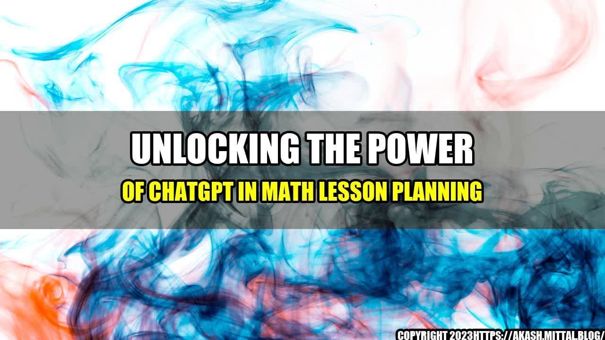

The Power of ChatGPT in Math Lesson Planning
As a middle school math teacher, I always strive to make my lessons engaging and interactive for my students. However, there are times when I struggle to come up with creative ways to teach difficult concepts. That's when I discovered the power of ChatGPT.
One day, I was browsing through social media, looking for new ideas to improve my lesson plans. That's when I came across an article on Edutopia about ChatGPT and its potential to transform education. Intrigued, I decided to give it a try.
Using ChatGPT, I was able to generate conversation prompts and discussion questions related to the math concepts I was teaching. These prompts helped me engage my students in meaningful conversations, which helped them understand the material better and apply it to real-world situations.
Thanks to ChatGPT, I was able to take my lesson planning to a whole new level. And I'm excited to share the benefits of this powerful tool with other math teachers.
Curated by Team Akash.Mittal.Blog
Share on Twitter Share on LinkedIn